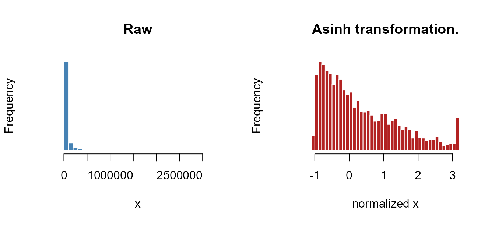
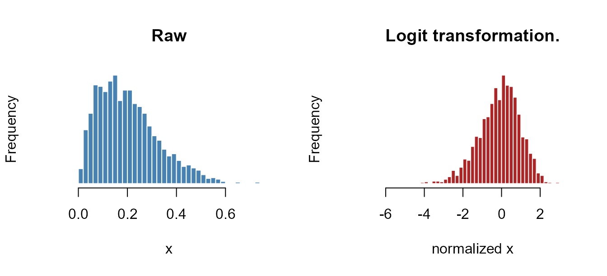
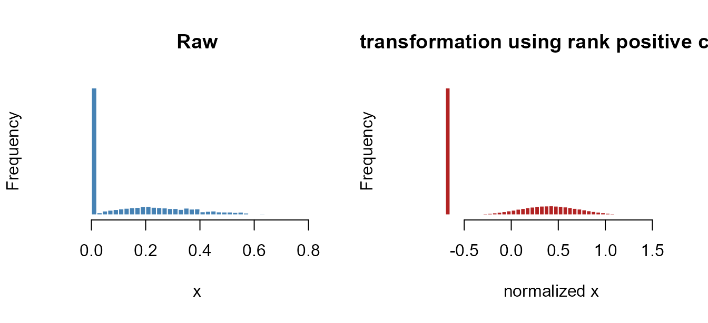
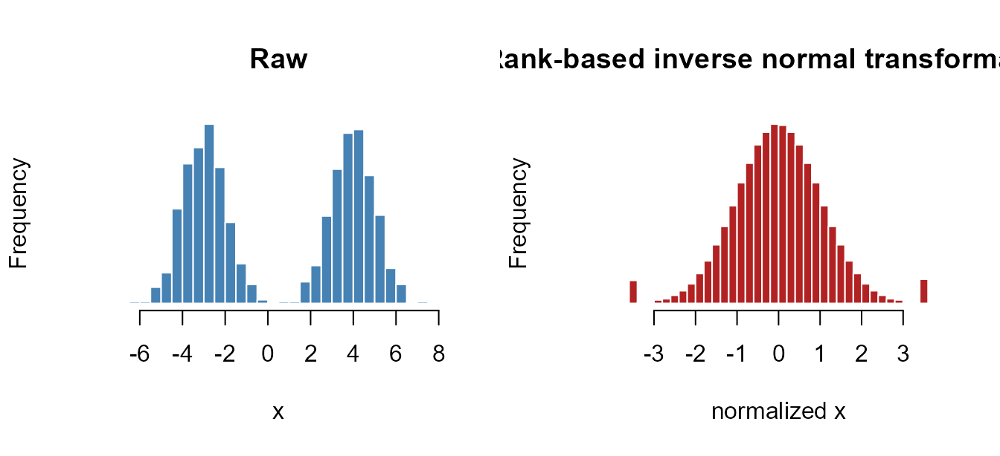

Every metric in fiscal returns four columns — the raw ratio plus winsorized (_w), standardized (_z), and percentile-rank (_p) versions. This article explains what those transformations do, the range codes that control them, and the distribution-aware machinery behind find_best_normalization().
Why bother? Nonprofit financial ratios are notoriously badly behaved: heavy right tails (a few enormous organizations), structural zeros (a nonprofit with no debt), hard bounds (a program-expense ratio can’t exceed 1), and the occasional data-entry outlier. Feeding raw ratios into a z-score or a composite index lets those pathologies dominate. Normalization tames them so that comparisons and indices reflect position, not scale artifacts.
Three steps behind every metric column
For a raw ratio, the package:
-
Winsorizes — clips extreme tails to a percentile bound (
_w). -
Standardizes — centers and scales the winsorized values into a z-score (
_z). -
Ranks — expresses each value as a percentile, 1–100 (
_p).
apply_transformations() is the engine that does all three at once. It is what each get_*() function calls internally:
set.seed(1)
ratio <- c(rlnorm(500, 0, 0.6), 40, 55) # a right-skewed ratio with two outliers
tf <- apply_transformations(ratio, winsorize = 0.98, range = "zp")
str(tf)
#> List of 4
#> $ raw : num [1:502] 0.687 1.116 0.606 2.604 1.219 ...
#> $ winsorized: num [1:502] 0.687 1.116 0.606 2.604 1.219 ...
#> $ z : num [1:502] -0.57 0.263 -0.748 2.133 0.436 ...
#> ..- attr(*, "transform_type")= chr "asinh"
#> ..- attr(*, "transform_label")= chr "Asinh transformation."
#> ..- attr(*, "transform_note")= chr "Applied asinh(x / s) with s = 0.97012."
#> ..- attr(*, "guess_reason")= chr "Variable is nonnegative and not primarily bounded in [0,1]."
#> ..- attr(*, "center")= num 0.881
#> ..- attr(*, "scale")= num 0.39
#> ..- attr(*, "range")= chr "zp"
#> ..- attr(*, "winsorize")= num 0.98
#> ..- attr(*, "offset")= num 0.001
#> ..- attr(*, "fit_object")=List of 24
#> .. ..$ range : chr "zp"
#> .. ..$ support :List of 6
#> .. .. ..$ code : chr "zp"
#> .. .. ..$ lo : num 0
#> .. .. ..$ hi : num Inf
#> .. .. ..$ sentinel_lo: num -0.001
#> .. .. ..$ sentinel_hi: num NA
#> .. .. ..$ offset : num 0.001
#> .. ..$ winsorize : num 0.98
#> .. ..$ offset : num 0.001
#> .. ..$ standardize : logi TRUE
#> .. ..$ robust : logi TRUE
#> .. ..$ transform_type : chr "asinh"
#> .. ..$ guess_reason : chr "Variable is nonnegative and not primarily bounded in [0,1]."
#> .. ..$ zero_tol : num 1e-08
#> .. ..$ one_tol : num 1e-08
#> .. ..$ boundary_mass_cutoff: num 0.1
#> .. ..$ hurdle_trans : chr "rank"
#> .. ..$ hurdle_range : num [1:2] 1 100
#> .. ..$ n_clean : int 491
#> .. ..$ raw_skewness : num 1.21
#> .. ..$ raw_kurtosis : num 1.36
#> .. ..$ transform_label : chr "Asinh transformation."
#> .. ..$ transform_note : chr "Applied asinh(x / s) with s = 0.97012."
#> .. ..$ params :List of 1
#> .. .. ..$ scale_const: num 0.97
#> .. ..$ standardization : chr "robust"
#> .. ..$ center : num 0.881
#> .. ..$ scale : num 0.39
#> .. ..$ fit_skewness : num 0.48
#> .. ..$ fit_kurtosis : num -0.332
#> .. ..- attr(*, "class")= chr "normalize_x_fit"
#> $ pctile : int [1:502] 25 57 18 94 61 19 68 77 72 38 ...
summary(data.frame(raw = tf$raw, w = tf$winsorized, z = tf$z, p = tf$pctile))
#> raw w z p
#> Min. : 0.1645 Min. :0.1645 Min. :-1.82645 Min. : 1.0
#> 1st Qu.: 0.6889 1st Qu.:0.6889 1st Qu.:-0.56492 1st Qu.: 25.0
#> Median : 0.9790 Median :0.9790 Median : 0.01661 Median : 50.0
#> Mean : 1.4062 Mean :1.2124 Mean : 0.23062 Mean : 50.3
#> 3rd Qu.: 1.5102 3rd Qu.:1.5102 3rd Qu.: 0.88289 3rd Qu.: 75.0
#> Max. :55.0000 Max. :3.7557 Max. : 3.02864 Max. :100.0Notice the two outliers (40, 55) are pulled back in the winsorized column, which in turn keeps the z-score and percentile well behaved.
The range codes
Winsorization and transformation both need to know a variable’s theoretical support — a program-expense ratio lives in [0, 1]; a growth rate can be negative; a dollar amount is non-negative and unbounded above. The range argument encodes this:
| Code | Support | Typical metric |
|---|---|---|
"np" |
negative → positive | growth rates, margins |
"zp" |
zero → positive | dollar amounts, days of cash |
"zo" |
zero → one | expense/revenue share ratios |
"nz" |
negative → zero | (rare) strictly non-positive measures |
"lo;hi" |
a custom pair | e.g. "0;10" for a bounded index |
The support determines where winsorization clips and which transformation is appropriate. winsorize_x() exposes the winsorization step directly:
w <- winsorize_x(ratio, range = "zp", winsorize = 0.98)
c(bottom = w$bottom, top = w$top)
#> bottom top
#> -0.001000 3.755658
sum(w$is_sentinel) # observations pushed to a bound
#> [1] 11
find_best_normalization(): distribution-aware transformation
Standardizing a badly skewed variable produces a badly skewed z-score. For multivariate work — correlations, factor analysis, the fiscal-health index — we want each indicator to be approximately normal first. find_best_normalization() does this by choosing, per variable, one of four transformations based on the shape of its stable interior (the non-sentinel, non-missing values left after winsorization).
The procedure is always the same:
- Winsorize and set aside sentinel (boundary) observations so pile-up at the bounds can’t distort the fit.
- Diagnose the stable interior — its support, boundary mass, and zero inflation.
-
Select a transformation from those diagnostics (or accept an explicit
vtype). - Fit the transformation’s parameters and a robust center/scale (median / MAD).
- Report before-and-after skewness and kurtosis so you can see whether the transformation actually helped.
Separating fit from apply means the same fitted model can score a later panel year on an identical scale — see apply_normalization() at the end.
How the transformation is chosen
guess_normalize_type() implements the decision rule. Writing p0 for the share of values at zero, p1 for the share at one, and using a boundary_mass_cutoff of 0.10:
is the variable effectively in [0, 1]? (range "zo", or >98% of values in [0,1])
├── yes
│ ├── p0 > 0.10 ........................ hurdle (zero-inflated)
│ ├── p1 > 0.10 ........................ rank_normal (piled up at the top)
│ └── otherwise ........................ logit (well-spread proportion)
└── no
├── non-negative? (range "zp", or min >= 0) .... asinh (heavy right tail)
└── mixed / irregular support ................ rank_normalThe four transformations, and the distribution pathology each one targets:
asinh — heavy-tailed magnitudes
Pathology. Non-negative amounts with a long right tail: a handful of huge organizations stretch the scale (dollar figures, days of cash). Transform. The inverse hyperbolic sine asinh(x / s), scaled by s, the median absolute non-zero value of the stable interior. It behaves like the identity near zero and like a log in the tails, is defined at zero, and accommodates negatives.
set.seed(1)
x_asinh <- rlnorm(2000, meanlog = 10, sdlog = 1.3) # e.g. total-asset dollars
fit <- find_best_normalization(x_asinh, range = "zp", verbose = FALSE)
c(type = fit$transform_type,
raw_skew = round(fit$raw_skewness, 2), fit_skew = round(fit$fit_skewness, 2),
raw_kurt = round(fit$raw_kurtosis, 2), fit_kurt = round(fit$fit_kurtosis, 2))
#> type raw_skew fit_skew raw_kurt fit_kurt
#> "asinh" "2.56" "0.81" "7.44" "-0.19"
plot_normalize_x(x_asinh, range = "zp")
A raw skewness above 2 collapses toward zero, and the extreme kurtosis is tamed.
logit — well-behaved proportions
Pathology. A ratio bounded in [0, 1] with mass spread through the middle and little pile-up at the ends (many expense- and revenue-share ratios). Transform. Rescale to [0, 1] relative to the theoretical support, then apply qlogis() (the log-odds), which stretches the bounded scale onto the whole real line.
set.seed(2)
x_logit <- rbeta(2000, 2, 8) # a right-skewed share ratio
fit <- find_best_normalization(x_logit, range = "zo", verbose = FALSE)
c(type = fit$transform_type,
raw_skew = round(fit$raw_skewness, 2), fit_skew = round(fit$fit_skewness, 2))
#> type raw_skew fit_skew
#> "logit" "0.81" "-0.53"
plot_normalize_x(x_logit, range = "zo")
hurdle — structural zeros
Pathology. A [0, 1] variable with a spike of exact zeros — organizations that simply don’t do the thing (no fundraising, no grants, no debt) — mixed with a continuous positive part. Treating the zeros as ordinary small numbers is wrong; they are qualitatively different. Transform. Zeros are retained as 0; the positive part is transformed separately (rank or logit) and rescaled to a positive interval. The trigger is p0 > boundary_mass_cutoff.
set.seed(4)
x_hurdle <- c(rep(0, 900), rbeta(1100, 2, 5)) # ~45% structural zeros
fit <- find_best_normalization(x_hurdle, range = "zo", verbose = FALSE)
c(type = fit$transform_type, p0_reason = fit$guess_reason)
#> type
#> "hurdle"
#> p0_reason
#> "Variable is effectively in [0,1] with substantial zero mass (p0=0.45)."
plot_normalize_x(x_hurdle, range = "zo")
The zero spike is preserved as its own group while the positive component is spread out.
rank_normal — irregular or mixed shapes
Pathology. Anything the parametric transforms can’t handle gracefully: bimodal distributions, mixed positive/negative support with no clean model, or a [0, 1] variable piled up at the top. Transform. A rank-based inverse normal transform maps the empirical ranks onto a Gaussian. It preserves ordering but not distances, so it is robust to almost any shape — at the cost of discarding the original spacing.
set.seed(3)
x_rank <- c(rnorm(1000, -3), rnorm(1000, 4)) # bimodal, mixed support
fit <- find_best_normalization(x_rank, range = "np", verbose = FALSE)
c(type = fit$transform_type,
raw_kurt = round(fit$raw_kurtosis, 2), fit_kurt = round(fit$fit_kurtosis, 2))
#> type raw_kurt fit_kurt
#> "rank_normal" "-1.75" "-0.02"
plot_normalize_x(x_rank, range = "np")
The bimodal shape (strongly negative kurtosis) is pulled toward a single normal mode.
One-step and reusable normalization
normalize_x() runs fit-and-apply in a single call — handy for a one-off variable:
z <- normalize_x(x_asinh, range = "zp", verbose = FALSE)
round(c(mean = mean(z), sd = sd(z)), 3)
#> mean sd
#> 0.315 1.062When you need the same transformation applied to new data (a different panel year, a holdout sample), fit once and re-apply, so both are scored on an identical scale:
fit <- find_best_normalization(x_asinh, range = "zp", verbose = FALSE)
z_new <- apply_normalization(rlnorm(50, 10, 1.3), fit = fit)Force a specific transformation with vtype if you want to override the auto-detection:
normalize_x(x, range = "np", vtype = "rank_normal")How this connects to the metrics
The _w / _z / _p columns on every metric come from the winsorize → standardize → rank path shown at the top (apply_transformations()). The distribution-aware transforms in this article — asinh, logit, hurdle, rank_normal — are what you reach for when building the fiscal-health index (vignette("fiscal-health-index")), where each indicator should be approximately normal before it enters a correlation or factor model.